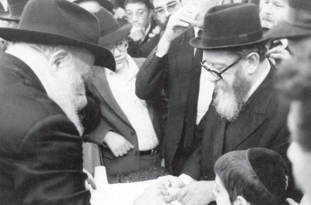

Pillar of Chesed
He was an accomplished Chassid, a prodigious Torah scholar, clever, very wealthy and a tremendous baal chesed. Above all else, he considered himself an ordinary person. Once he became involved with Lubavitch, he enjoyed a special relationship with the Rebbe, and on the Rebbe’s behalf, he carried out

Rabbi Avrohom Parshan (Parshanovsky) was born on 24 Tammuz 5670 (1910) in Lodz, Poland. His father was the Chassid R’ Dovid, who was a highly respected Chassid of Sochatchov, and his mother was Mrs. Michla Breindel.
He made aliya after he married and settled in the center of Tel Aviv. His wife passed away six weeks after the birth of his daughter, leaving two orphans, Dovid (d. 5758) and Esther (now, of Queens, N.Y.). R’ Parshan raised his two children with great devotion. Three years later, he married Mrs. Bracha Freund, daughter of one of the illustrious families of Yerushalayim. They moved to Yerushalayim. He had two children with his second wife, Elisheva (living in Eretz Yisroel) and Yosef (of Toronto).
He suffered a lot in the early years in Eretz Yisroel. Despite this, one always saw joy on his face, which radiated great wisdom.
In 5699 (1939), Rabbi Eliyahu Kitov (whose original name was Rabbi Avrohom Makotovsky), along with Rabbi Avrohom Trager and Rabbi Shlomo Eisenberg, started the religious workers movement called Pagi (an acronym for Poalei Agudas Yisroel). After the passing of R’ Eisenberg, R’ Parshan joined the leadership of the movement. At that point, the three leaders of Pagi were called “the three Avrohoms.”
R’ Parshan’s work focused primarily on building neighborhoods for residential dwelling. This was the first time that a neighborhood was built exclusively for religious Jews with the apartments sold cheaply, according to the financial means of the people.
In his work for Pagi, R’ Parshan fought together with his colleagues for religious ideals. Despite the differences of opinion among some Chassidic leaders, he was in close touch with all the g’dolei ha’Torah in Eretz Yisroel, including the Admurim of Lelov, Belz, and Ger and the Admurim of the House of Ruzhin who showed him great signs of closeness. He was also in close contact with the Gaon of Tchebin and the great rabbanim of Yerushalayim.
His home in Yerushalayim was always full of guests. He hosted guests of all types and backgrounds without checking their credentials. Many needy people felt at home with him, as did various Admurim including the Admur Rabbi Aharon Rokeach of Belz, who came to Eretz Yisroel and lived with the Parshan family for a week while R’ Parshan took care of all his needs and that of his escorts.
In 1946, R’ Parshan flew to Canada, and while the plane was over Europe, it experienced a technical problem. The pilot could not correct it and the plane crashed to the ground. All passengers but three were killed; one of them being R’ Parshan, who suffered a severe leg injury. He was hospitalized in Munich for three months. He suffered for years from this injury.
When he returned home, he wanted to express his thanks to Hashem for his miraculous rescue. He heard that the household of the tzaddik Rabbi Moshe Mordechai of Lelov was suffering from hunger. He decided to support the Admur’s family. He gave them large sums of money and the family began living in relative comfort. He developed a special connection with the Admur and his daughter later married the Admur’s son.
MESIRUS NEFESH FOR JEWS
R’ Parshan had mesirus nefesh for others. During the siege of Yerushalayim during the War of Independence, there was a serious shortage of food and kerosene for the ovens. Many attempts to smuggle food and supplies from the outlying areas cost lives. The Arab soldiers shot at vehicles that tried to get into Yerushalayim. R’ Parshan was not daunted, and together with other Jews, he took roundabout roads and smuggled in basic food items as well as medication and kerosene. One time, his life was in grave danger after Arab soldiers discovered the jeep he was in and shot at it. It was only when they arrived in Yerushalayim that they saw that the armor plating was pockmarked with bullets that did not injure anyone.
After the emergency government was established by Ben Gurion, he was appointed as deputy to the welfare minister, Dov Yosef, and was given responsibility for the Yerushalayim area, since they knew of his aid to the needy and weak. He served in this role briefly until general elections were held.
ENCOUNTERING LUBAVITCH
In 5714, he immigrated to Canada and settled in Toronto. Here he focused his energies on business and was very successful.
He began looking for a spiritual mentor. In those days, he visited the homes of many g’dolei Yisroel who lived in the U.S. and Canada. He went to Chassidic courts and checked out their leaders and what the Chassidus was about.
He finally went to 770. He spent Shabbos in Beis Chayeinu and attended the farbrengen and felt that this was his place. He would later explain that on that Shabbos he realized that the Rebbe was truly and sincerely working on behalf of the entirety of Jewry and wasn’t seeking honor or momentary personal gain.
His way to Chabad was accompanied by a lot of encouragement from the Rebbe. He was given various Chassidic s’farim by the Rebbe, and the Rebbe’s secretary, Rabbi Chaim Mordechai Isaac Chadakov, would call him at least once a week and encourage him to learn Chassidus. R’ Parshan, who was a big expert in sifrei Chassidus, mainly the sifrei Chassidus of Sochatchov, found in the teachings of Chabad a broad framework for study and deep analysis. His background, along with his great knowledge, helped him in the transition to Chabad.
At first, he was not involved in the Lubavitcher community in Toronto, and was barely even known to the Chassidim there. Then, one day, there came a surprising instruction from the Rebbe to the Lubavitcher community of that city.
In those days, there was a wealthy person who wanted to donate a building to Chabad. Until then, there wasn’t a proper building for the Lubavitcher community’s needs and community leaders asked the Rebbe whether to accept the donation. The answer astounded everyone: not to make a move without R’ Parshan.
The community leaders quickly asked R’ Parshan for advice and he said to buy the building at the symbolic price of one dollar. They did not understand why he said to do this, but did as the Rebbe told them. Two weeks later, everyone understood how right he was. The rich man said he changed his mind about the donation. According to Canadian law, if the building was given as a gift, he could take it back, but since the building was legally purchased, he could not take it back. The Chabad community in Toronto realized that there lived in their midst a Chassid of the Rebbe who was exceedingly clever.
Another time that his cleverness came to the fore was at the funeral of the Rebbe’s mother, Rebbetzin Chana, a”h. There were many policemen present during the funeral, making it difficult to take out the bottom board under the coffin, as is customary, since this is illegal in New York. A delay and tension ensued which caused a commotion and the Rebbe looked anguished.
While many stood around in confusion, R’ Parshan took the initiative and gathered the policemen round to discuss whether it was permissible for him to offer them money for their dedication and for the extra work caused by the large crowd. While conducting this distraction, the chevra kadisha was able to finish the burial according to Halacha. In the end, he gave $100 to the police.
A few days later, he received a receipt for $100 from Machne Israel with a letter from R’ Chadakov that said the Rebbe said to give this to him for the funeral expenses of Rebbetzin Chana.
The Rebbe later said in yechidus to the organizing committee that they needed to learn ingenuity and Chassidic cleverness from R’ Parshan.
THE REBBE ADVISES ON REAL ESTATE
R’ Parshan received many instructions from the Rebbe in business matters. Since he was involved in real estate, he needed much Heavenly assistance. At first, he bought large lots near Toronto, thinking the city would expand and these lots would rise in price, which they did. But when he wanted to buy real estate in Houston, Texas, the Rebbe quoted the Chazal, “If you want to lose your property, hire workers and don’t supervise them.” He meant that since R’ Parshan lived far from Houston and would be unable to supervise his business dealings, he could expect losses. He saw very soon how that was an exact assessment of the situation and very quickly sold all his property in Houston.
For many years he owned a farm in a suburb of Toronto in partnership with a real estate broker. One day, the broker offered to buy his share of the property. Most of the time, R’ Parshan did not ask the Rebbe business-related questions that seemed trivial to him. But this time, he deviated from his usual practice and when he asked, the Rebbe told him not to sell.
A month later, the partner asked him again and made a higher offer. Again, the Rebbe told him not to sell and instead, advised him to ask for an astronomical sum and to state explicitly that the offer was good only until Rosh Hashana.
On Erev Rosh HaShana, R’ Avrohom went out to buy simanim (a widespread practice in Jewish communities). When he returned from shopping, the partner came to him, for the purpose of cutting a deal. He expressed his willingness to pay the high price. It turned out that the purchaser was a large British development syndicate by the name of Bromley and they needed this property for one of their projects.
On another occasion, R’ Avrohom owned a piece of property somewhere else and he debated about whether to sell it. Usually, the Rebbe advised him not to sell any property in the state it was in when it was purchased, but to invest money in developing it or improving it so he could sell at a profit. In any case, this time, R’ Avrohom needed the cash and he thought of selling the property as is.
In yechidus, without mentioning his cash flow problem to the Rebbe, he asked the Rebbe whether to sell. The Rebbe said no. After the yechidus, R’ Chadakov asked to see him. R’ Chadakov told him that the Rebbe said that if a person thinks of selling a property, he probably needs the money and the Rebbe told him to offer R’ Avrohom a loan of $50,000 for six months, interest-free of course.
GENEROUS PHILANTHROPY
The Rebbe once said regarding R’ Parshan’s generous contributions, that he taught Chabad Chassidim how to give tz’daka. R’ Parshan generously gave to mosdos, organizations and private people. He also donated buildings worth fortunes, and it was all done with gladness.
R’ Parshan donated toward many Chabad mosdos in many countries. He was the one who donated the house belonging to Machon Chana in Crown Heights, Beth Lubavitch in Paris, the first mivtzaim tank in New York, and he also donated a lot to Chabad mosdos in Toronto, California, and to Kollel Chabad. He also built the dormitory building for Yeshivas Tomchei T’mimim in Lud which says on it “Beit Parshan.”
The night of 6 Tishrei 5734/1973, the Rebbe called for R’ Avrohom Parshan and R’ Yehoshua Korik, and gave them bundles of a hundred $10 bills, and said he also wanted to be a partner in Machon Chana.
***
All his life, he was an extraordinary host. When he built his home in Toronto, he prepared a spacious area for guests. The second floor of his home was for guests. He always had guests staying with him, including Admurim, rabbanim, mashpiim, roshei yeshivos, and Jews going through hard times, beggars and even criminals.
In the list of guests who stayed in the Parshan home over the years you can find the names of the Gerrer Rebbe (the Lev Simcha), Rabbi Efraim Wolf, Rabbi Menachem Porush, Dr. Yosef Burg, Mrs. Ruth Blau, the mashpia R’ Mendel Futerfas, R’ Eliezer Nannes, and many others. There was also Daniel, a young man who was hosted for years.
R’ Parshan did not only open his home. He and his wife personally took care of their guests. R’ Parshan served food to his guests and took care of all their needs. Aside from hosting and the sizable contributions he made to each guest, he did much to help meshulachim and collectors raise money. He gave each of them addresses of donors and arranged their papers for them so donations they received would be tax-exempt.
Among his final activities was sending a nice donation to help new Chabad Houses in Eretz Yisroel, since in the year that he died, 5746, the Rebbe urged that new Chabad Houses be opened everywhere.
BUILDING CHABAD MOSDOS EVERYWHERE
Thanks to his great wealth and connections, he merited being involved in building up Chabad. He worked a lot, under the Rebbe’s instruction, to redeem buildings in Crown Heights during the difficult years in the neighborhood, and he was the askan who founded Shikkun Chabad in Lud. This was thanks to an instruction of the Rebbe, cloaked as sound business advice.
It was when R’ Avrohom considered investing a sizable sum into a certain property in Eretz Yisroel. In those days, there were many people in the religious sector who stood on line at the door of a certain contractor in order to buy property from him. R’ Avrohom met with him and they came to an agreement which seemed like an attractive deal. R’ Avrohom made it conditional on the Rebbe’s approval.
The Rebbe said he preferred a different offer and suggested that R’ Avrohom meet with R’ Efraim Wolf. R’ Efraim, who had just gotten a piece of property from the government near the yeshiva in Lud, began planning a Chabad neighborhood there. R’ Avrohom expressed interest in investing and that is how one of the largest Chabad communities in Eretz Yisroel came to be. All the apartments were sold and R’ Avrohom made a nice profit, in addition to having the merit of building a large Chassidic center.
The contractor, whose offer the Rebbe dismissed, went bankrupt and many people who had put their faith in him lost their money.
SECRET MISSIONS
R’ Parshan carried out many assignments for the Rebbe, most of them secret. He was the Rebbe’s conduit to Admurim, especially to Ger, with whom he was very close, and other rabbanim and public figures in Eretz Yisroel and around the world. The Rebbe sent various messages his way and instructed him to exert his influence in the matter of Mihu Yehudi and many other things.
His family members relate that there were instances in which he was sent to report to the Rebbe about what was going on in a certain place. Most missions were and remain a secret, like the one to a famous rosh yeshiva who fought the Rebbe. All we know is that R’ Parshan was sent to put him in his place.
He had assignments in Europe including establishing mikvaos in faraway places like Italy and Spain.
Perhaps we can learn of the special relationship between the Rebbe and R’ Parshan from the following response. R’ Parshan wrote, asking about assistance he had provided during the court case over the s’farim, saying that he hoped that this action “adds at least the equivalent of a little finger.” To this, the Rebbe responded, “With a little finger?! He did the aforementioned with ‘all your heart’ and caused a nachas ruach, incomparably greater than a little finger. I will mention it at the tziyun.”
HIS PASSING
Rabbi Parshan passed away on 11 Iyar 5746/1986 at the age of 75. A large crowd of friends and admirers from all over the U.S. and Canada attended the funeral, including rabbanim, roshei yeshivos and shluchim of the Rebbe. According to his will, he was flown to Eretz Yisroel and the funeral passed by Yeshivas Tomchei T’mimim in Lud that he had helped to build and maintain.
THE REBBE’S PERSONAL REPRESENTATIVE
One day, as R’ Avrohom sat in his office in Toronto, the phone rang. On the line was Rabbi Chadakov. “The Rebbe asks whether you are prepared to fly to Milan.”
“Of course,” said R’ Avrohom, without asking the purpose of the trip. “When?”
“Today,” was the curt response.
R’ Avrohom agreed but R’ Chadakov told him to ask his wife’s permission for the sudden trip. His wife gave her consent and R’ Avrohom was on a plane a few hours later.
After landing in Milan, R’ Avrohom tried to contact the shliach in the area, Rabbi Gershon Mendel Garelik, but was unsuccessful. Since he did not know what he was supposed to do, he took a taxi and went to R’ Garelik’s shul.
R’ Avrohom and R’ Garelik arrived at the shul around the same time. R’ Garelik told R’ Avrohom that the mother of Astro Mayer had died that morning. Mayer was a member of one of the richest families in Milan and was very involved in Israeli politics in which he took an uncompromising position about amending the law of return and firmly establishing it on a halachic basis. This was despite being a Zionist activist all his life.
As they spoke, the phone rang in R’ Garelik’s office. R’ Chadakov was calling to say that the Rebbe said that since R’ Avrohom was in Milan, he should represent Chabad at the funeral.
Due to the Mayer family’s position in Milan, many non-Jewish dignitaries wanted to pay their final respects and even the Catholic church sent a delegation. R’ Avrohom, who heard about that, called the mourners’ house and said the Rebbe sent him as a special emissary to the funeral in appreciation for Astro Mayer’s efforts to amend the law of Mihu Yehudi. The man expressed tremendous appreciation for this gesture.
R’ Avrohom said that his presence at the funeral was conditional on the burial being carried out according to halacha, and so representatives of the church could not be present. Mayer agreed to this immediately.
At the funeral, where there were also representatives of the Israeli government, R’ Avrohom spoke passionately in praise of Mr. Mayer’s efforts to amend the law of return and added that this would be an eternal merit for his deceased mother.
Dov Levanon. "Pillar of Chesed." Beis Moshiach, no. 1114 (April 17, 2018).